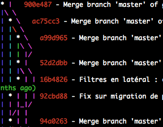

Git Pro Tips • Édition 2020
Une présentation de Delicious Insights
Une présentation de Delicious Insights
Christophe Porteneuve et Maxime Bréhin, + de 40 ans d’expérience cumulée 😱
100% Git depuis 2008
Nous avons la passion de transmettre, de partager via les formations, articles, conférences, ateliers, screencasts…
L’éternelle histoire du changement de paradigme…
Ou : trimballer sa culture existante dans son nouvel environnement.
Erreur tragique mais ô combien courante
Arrêtez de foutre n’importe quoi dans vos commits.
1 commit = 1 périmètre réduit, d’un coup, ni plus, ni moins.
Pour y arriver, il faut maîtriser add et restore / reset, mais aussi diff, show et bien entendu commit.
git config --global alias.st status
git config --global status.showUntrackedFiles all
git config --global color.ui auto
git config --global color.status.untracked 'white red'
git config --global color.status.unmerged 'magenta italic'
git st
…
Untracked files:
(use "git add <file>..." to include in what will be committed)
vendor/scripts/bootstrap.min.js
vendor/scripts/jquery.min.js
vendor/scripts/underscore.js
git config --global diff.mnemonicPrefix true
git config --global diff.renames copies
git config --global diff.submodule log
git config --global diff.wordRegex .
git config --global color.diff.meta yellow bold
git config --global color.diff.frag magenta bold
git config --global color.diff.whitespace red reverse
npm install -g diff-so-fancy
git config --global pager.diff diff-so-fancy
git config --global pager.show diff-so-fancy
Le stage ou l’index : ce qui est validé pour partir au commit.
Permet de sculpter finement le commit à venir.
git add pathspec… = « prends pathspec en photo et mets ça dans le colis du prochain commit ».
Synonyme : git stage. Rien à voir avec svn add.
Obligatoire pour versionner un nouveau fichier (untracked), contrairement à quand le fichier est déjà versionné.
(À ce sujet, si vous voulez voir un nouveau fichier dans votre diff sans le stager d’entrée de jeu, git add -N)
Version diff :
git diff --staged
diff --git c/index.html i
index 5237399..85e642f 100644
--- c/index.html
+++ i/index.html
@@ -1,5 +1,5 @@
<!doctype html>
-<html>
+<html lang="fr">
Version snapshot (tout le fichier) :
git show :0:index.html
<!doctype html>
<html lang="fr">
<head>
…
Les whitespaces, le plus souvent, OSEF.
git diff
…
<!doctype html>
-<html>
+<html lang="fr">
<head>
- <meta charset="utf-8">
- <title>Git ProTips</title>
+ <meta charset="utf-8">
+ <title>Git ProTips</title>
…
git diff -w
…
<!doctype html>
-<html>
+<html lang="fr">
<head>
…
git diff -w --word-diff
…
<!doctype html>
<html{+ lang="fr"+}>
…
Mais aussi façon agrégats : git diff --stat et git diff --dirstat
Qui a dit qu’on devait stager tout le fichier d’un coup ?
git add -p index.html
…
<!doctype html>
-<html>
+<html lang="fr">
<head>
…
Stage this hunk [y,n,q,a,d,/,j,J,g,e,?]? y
…
<h1>Git ProTips</h1>
+ <footer>© 2020 Ma Boîte</footer>
…
Stage this hunk [y,n,q,a,d,/,K,g,e,?]? n
Juste critique parce que dans la vraie vie, on a toujours 2–3 sujets distincts en cours dans un même fichier…
Sortir un snapshot du stage : git reset (historique) ou git restore --staged (2.23+, août 2019).
git restore --staged index.html
Annuler tout le stage :
git reset
Unstaged changes after reset:
M index.html
C’est comme pour l’ajout : on peut n’unstager que certains fragments.
git restore --staged -p index.html
…
…
<!doctype html>
-<html>
+<html lang="fr">
<head>
…
Unstage this hunk [y,n,q,a,d,/,j,J,g,e,?]? n
…
<h1>Git ProTips</h1>
+ <footer>© 2020 Ma Boîte</footer>
…
Unstage this hunk [y,n,q,a,d,/,K,g,e,?]? y
git commit --amend remplace par l’état courant.
git config --global alias.oops commit --amend --no-editOublié de versionner une dépendance ?
git add vendor/scripts/underscore.min.js
git oops
Versionné un fichier sensible ?
git rm --cached config/database.yml
echo config/database.yml >> .gitignore && git add .gitignore
git oops
Foiré le message ?
git oops -m 'Le message ni énervé ni bourré de fautes'
git show [object] permet d’afficher au mieux un commit (par défaut HEAD), une arbo, un snapshot (blob)…
git show # ou explicitement : git show HEAD
commit 8a5a383
Author: Christophe Porteneuve <christophe@delicious-insights.com>
Date: Sun Oct 26 15:04:17 2014 +0100
Premier index
diff --git a/index.html b/index.html
…
Le contenu de app/initialize.js en branche legacy ?
git show legacy:app/initialize.js
'use strict';
…
Histoire d’avoir les untracked et un message utile :
(master *+%) $ git stash push -u -m 'migration BS3'
Saved working directory and index state On master: migration BS3
HEAD is now at 8a5a383 Trackers GA asynchrones
(master $) $
Pour que votre prompt* vous rappelle que vous avez du stash, pensez à activer la variable d’environnement GIT_PS1_SHOWSTASHSTATE, qui y ajoutera un $.
Pour récupérer le stash, évitez apply, préférez un pop :
(master $) $ git stash pop --index
…
(master *+%) $
pop tente l’apply, et s’il marche enchaîne avec drop. Rien de pire que de laisser traîner un stash réintégré…
Même s’il stocke le stage par défaut, le stash ne le restaure pas par défaut, pour éviter des « fusions auto » dans le stage. Pas très cohérent avec ce que fait par exemple merge, mais bon… Donc tentez toujours d’abord --index.
LOG_FORMAT='%Cred%h%Creset -%C(auto)%d%Creset %s %Cgreen(%an %ad)%Creset'
git config --global alias.lg "log --graph --date=relative --pretty=tformat:'$LOG_FORMAT'"
git config --global log.abbrevCommit true
git config --global log.follow true
git config --global grep.extendedRegexp true

Par références aval/amont
git lg [ref…] [^neg-ref…] # Liste spécifique aval
git lg ref.. # Amont
git lg [--branches[=glob]|--tags[=glob]|--all] [--exclude=glob] # Wildcards aval
git lg -n # Nombre de commits listés
Par métadonnées
git lg --grep 'fragment du message complet' [--invert-grep] [--all-match] [-i]
git lg --author 'fragment du noms e-mail de l’auteur·e' [-i]
git lg --[no-]merges
git lg -- pathspec…
Évidemment combinable à l’infini
$ git lg --author=patter --grep '^Merge' -10 -- activerecord activemodel
Besoin de voir les commits uniques de 2 branches/tags ? (en gros, remonter juste à leur ancêtre commun).
Utilisez A...B.
git lg ref1...ref2
git lg master..bootstrap3-to-rebase
git lg master...bootstrap3-to-rebase
git blame, c’est comme le H de Hawaii : ça ne sert à rien.
Préférez chercher sur les contenus actifs des diffs : c’est plus pertinent et ça marche aussi pour des lignes virées !
Options -S* (insertions OU suppressions) et -G (tous diffs).
git lg -S "Donec sed" -1 -p index.html
...
* 6d731f3 - Content tweaks (Christophe Porteneuve 1 year, 1 month ago)
…
| @@ -60,18 +60,18 @@
…
| <h2>Three-point rebasing</h2>
| - <p>Donec sed odio dui. Cras justo odio, dapibus ac facilisis in, egestas eget quam. Vestibulum id ligula porta felis euismod semper. Fusce dapibus, tellus ac cursus commodo, tortor mauris condimentum nibh, ut fermentum massa.</p>
| + <p>Cras justo odio, dapibus ac facilisis in, egestas eget quam. Vestibulum id ligula porta felis euismod semper. Fusce dapibus, tellus ac cursus commodo, tortor mauris condimentum nibh, ut fermentum massa.</p>
| <p><a class="btn" href="#">View details »</a></p>
…
Il y a un filtrage de fou sur le log : par fragment de fichier, notamment par corps de fonction. On utilise soit un intervalle (ex. -L 1,100:index.html) soit en fournissant une regex pour la fonction englobante :
git lg -L :getCheckIns:app/lib/persistence.js
* 12164bc - Refactoring gestion Check-In Details, et gestion corner-cases (Christophe Porteneuve 2 days ago)
|
| diff --git a/spa-final/app/lib/persistence.js b/spa-final/app/lib/persistence.js
| --- a/spa-final/app/lib/persistence.js
| +++ b/spa-final/app/lib/persistence.js
| @@ -81,4 +86,7 @@
| function getCheckIns() {
| - return collection.toJSON();
| + return collection.map(modelWithCid);
| }
|
* d714350 - Initial import (Christophe Porteneuve 1 year ago)
diff --git a/app/lib/persistence.js b/app/lib/persistence.js
--- /dev/null
+++ b/app/lib/persistence.js
@@ -0,0 +34,4 @@
+function getCheckIns() {
+ return collection.toJSON();
+}
Par défaut, sur un git push seul, Git va tenter l’actuelle si trackée de même nom*
Ce qu’on veut : l’actuelle, quel que soit le nom distant.
git config --global push.default upstream
Et par ailleurs, on aimerait bien auto-pusher les tags annotés locaux qui deviendraient disponibles sur le remote :
git config --global push.followTags true
La première fois que vous poussez une branche que vous voulez tracker ensuite, pensez à caler à la volée le tracking :
(stats-v3) $ git push -u origin stats
Counting objects: 5, done.
Delta compression using up to 4 threads.
Compressing objects: 100% (3/3), done.
Writing objects: 100% (5/5), 488 bytes | 0 bytes/s, done.
Total 5 (delta 0), reused 0 (delta 0)
To git@github.com:tdd/private-tests.git
* [new branch] stats -> stats
Branch stats set up to track remote branch stats from origin.
Réflexe pré-push : nettoyer ton historique local, lequel est forcément plus ou moins en bordel.
git lg @{u}..
git rebase -i
Le rebase interactif nous permet de mettre au propre nos travaux locaux avant de partager tout ça avec les copains.
Raison de plus pour ne pas faire de pushes trop souvent. On est pas en SVN, les copains ! On pond des commits souvent (10–30 ×/j), mais on push plus rarement (2–3 ×/j)
On pousse seulement si on a la garantie qu’on écrase rien qu’un·e collègue aurait poussé entre temps
git push --force-with-lease
Parce-que git push --force ne devrait pas être le défaut !
Par défaut, git pull finit par un merge. C’est super con.
Quand tu pull, tu ne fusionnes pas une branche tierce chez toi : tu récupères les mises à jour sur ta branche courante.
En plus, ça pourrit le graphe :
Un pull devrait plutôt rejouer notre taf local sur la branche distante à jour : par définition, un rebase.
Il faut juste faire attention à ne pas inliner par inadvertance un merge au sein du travail local.
Une bonne fois pour toutes :
git config --global pull.rebase merges
Deux options utiles pour git branch :
-a liste les locales et les distantes
-vv ajoute les 1ères lignes de commit et, pour les trackées, l'état du tracking
(2019-octobre u+1) $ git branch -avv
* 2019-octobre abaca0f [origin/2019-octobre: ahead 1] Retrait vieilles demos
legacy 41b5bf7 [origin/legacy] Script Bash de packaging + déploiement du fichier Zip de debrief (exécutable par Chris seul vu les droits SSH requis)
master 0208acb [origin/master] Fix .groc.json
v2018 521350a [origin/v2018: behind 2] Backport changement cible lien plugins Backbone vers backplug.io
v2017 27b1791 [origin/v2017: gone] MàJ docs annotés
remotes/origin/2017-octobre 10ad1b1 MàJ code source annoté
remotes/origin/bs3 49bc984 Tweaks en cours de session
remotes/origin/bs3-basis 650f025 Tweak export connectivity
…
On ne fusionne que pour rapatrier de façon visible (bosse dans le graphe)
un périmètre fonctionnel identifié (bugfix, feature, story, etc.).
git config --global core.whitespace '-trailing' # OSEF des écarts de whitespace en fin de ligne
git config --global merge.conflictStyle diff3 # J’aime bien avoir le chunk « ancêtre commun »
git config --global merge.log true # Ou un nombre de commits, par défaut 25
git config --global merge.ff false # Un merge doit rarement être fast-forward
Le process classique et sûr :
git status # Quelle est l’étendue des dommages ?
git mergetool path # Si on en a (+ veut) un, pour le fichier concerné
git add path # Fichier par fichier, après l’avoir arbitré
git commit [--no-edit] # Une fois que tout est staged
Récupérer un commit unique, sans son historique. Parfait pour les fixes et tout ce qu’on trouve dans une branche de release, à réintégrer ailleurs (ex. master).
git cherry-pick -x 3-2-stable
On liste les commits candidats avec git log --cherry (je préfère à git cherry) :
git lg --cherry HEAD...topic
* 363f53d - (topic) Nav stats (Christophe Porteneuve 1 year, 1 month ago)
= ba05b8d - Stats JS (Christophe Porteneuve 1 year, 1 month ago)
* 3abb73d - /img/ -> /images/ (Christophe Porteneuve 1 year, 1 month ago)
La plupart des conflits sont simples à arbitrer. Il faut juste la bonne méthodo :
# Qui est le prochain coupable ?
git status
# On édite le fichier en direct, ou si on a un bon outil dédié configuré…
git mergetool path
# Une fois que les conflits sont réglés*, on le dit :
git add path
# Si on a mal arbitré (notammment mergetool) ou que le style de marqueurs nous gêne :
git checkout --conflict=(merge|diff3) path
# Besoin de voir un des 3 snapshots sans mergetool ?
git show (ref|MERGE_HEAD|HEAD|:1):path
# Envie de récupérer le fichier tel quel depuis une des branches, ou ailleurs ?
git checkout ref [--] path
# Ou la version verbeuse : git restore --source=ref --staged --worktree [--] path
Parfois le diff ne suffit pas, notamment quand le code en conflit
fait référence à d’autres parties du code qui ont, elles, bien
fusionné, noyant le contexte. Disons qu’on a fait un git merge truth dans master.
On peut alors ressortir les snapshots côté récipient :
git show :2:intro.md
# ou : git show HEAD:intro.md
# ou : git show master:intro.md
Côté source du code fusionné :
git show :3:intro.md
# ou : git show MERGE_HEAD:intro.md
# ou : git show truth:intro.md
Dans l’ancêtre commun (avant la divergence) :
git show :1:intro.md
Très rarement, même les snapshots ne suffisent pas à comprendre le problème, et on veut retracer le cheminement du code depuis l’ancêtre commun jusqu’aux têtes de branches.
C’est faisable à tout moment avec la syntaxe A...B
déjà vue, mais lors d’une fusion Git a déjà tout le contexte, il
suffit de faire un --merge (les variantes
--left-only et --right-only marchent
toujours) :
git lg --merge -p intro.md
* 9d8dafd - (truth) Truth (Christophe Porteneuve 12 minutes ago)
…et ici le diff…
* f068b20 - (HEAD, master) Disinfo (Christophe Porteneuve 12 minutes ago)
…et ici le diff…
Si vraiment tu n’y arrives pas pour le moment (manque d’infos), annule la fusion proprement :
git merge --abort
# Anciennement : git reset --merge
Nettement plus propre et moins dangereux qu’un git reset
--hard. Préserve tes modifs locales pré-fusion.
rerere : reuse recorded resolution
Prend deux empreintes complètes pour chaque conflit (dénuée du chemin, etc.) : une au conflit, une au commit.
Assiste les conflits ultérieurs sur le dépôt en ré-utilisant ces empreintes en cas de résolution antérieure.
git config --global rerere.enabled true
git config --global rerere.autoupdate true # seulement pour les gens attentifs !
Activé aussi par la présence de .git/rr-cache
Quelques-uns de nos articles Git : sur
merge vs. rebase,
rerere,
le log,
reset,
bisect,
les workflows,
les hooks,
les submodules…
Notre formation Git qui envoie du pâté (en inter-entreprises comme en intra chez vous !)
On a des cours vidéos sur Git, dont un gratuit indispensable qu’on retrouve également sur YouTube.
Maxime Bréhin
Les slides sont sur bit.ly/git-pro-tips